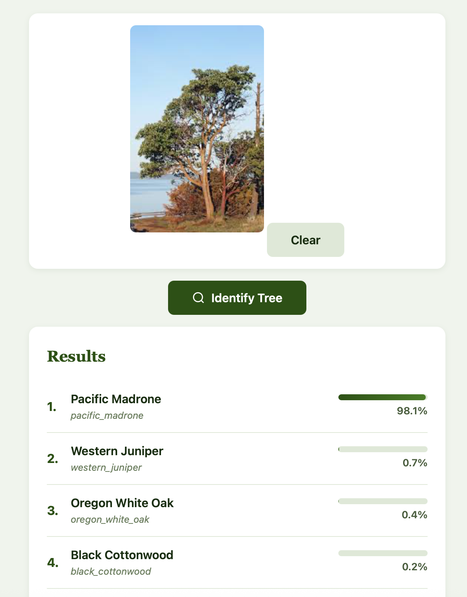
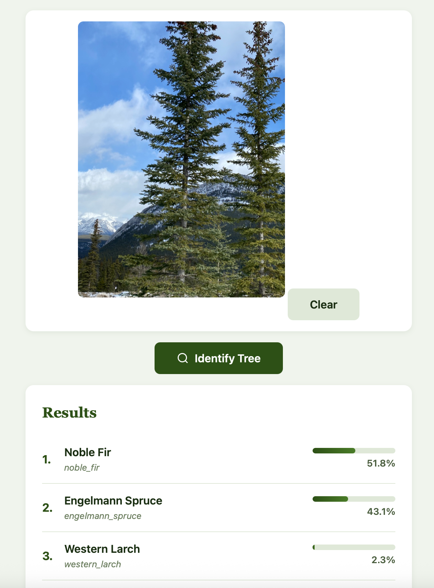
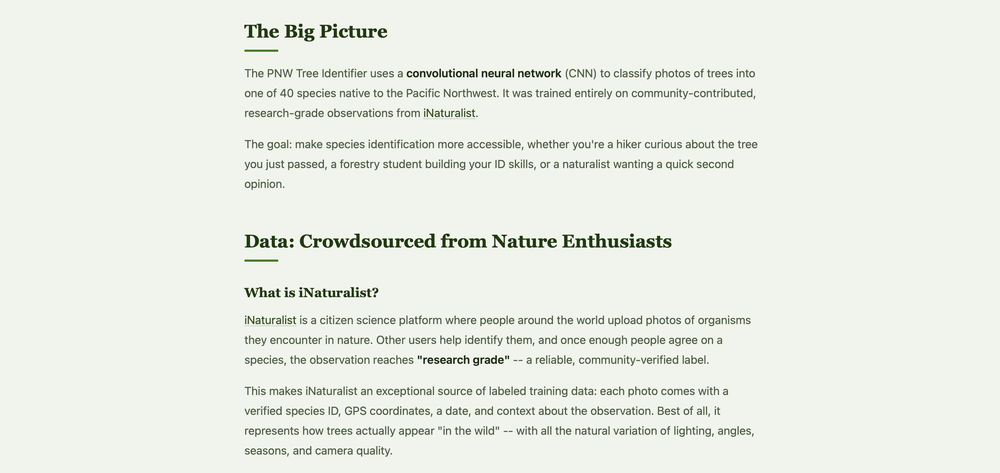

flowchart LR
A["iNaturalist API<br/>(v1/observations)"] --> B["~400 photos<br/>per species"]
B --> C["Validate &<br/>clean images"]
C --> D["Resize to<br/>384px"]
D --> E["SHA256<br/>deduplicate"]
E --> F["Stratified split<br/>70 / 15 / 15"]
F --> G["10,800 train"]
F --> H["2,300 val"]
F --> I["2,300 test"]
style A fill:#2d5016,color:#fff
style G fill:#4a7c28,color:#fff
style H fill:#6b8e3a,color:#fff
style I fill:#6b8e3a,color:#fff
Go hug a tree!
My wife and I are true tree lovers. Indeed, a major reason for our move out to Washingon State was our love for the outdoors! Throughout our time living in the Pacific Northwest, my wife is the one who stops to admire the bark patterns on a Pacific Madrone, wonders aloud how many Douglas Firs we’ll see at the start of each trail, and reminds me to plan for our annual fall “larch march,” when the Western Larch turns gold while all the other conifers stay green.

As we’ve gone on more hikes over the years, she’s developed a keen interest in determining the kinds of trees we encounter together. We’ve used the iNaturalist app, Apple photo search, and Google photo search to help with identification. She even purchased a pocket tree identifier guide to help her identify trees from leaf patterns. As my career has progressed, I’ve also talked to her about some of my past work in computer vision, and how companies like Apple and Google have used deep learning approaches to classify images for years.
One day, she made a request to me: could I build her a personal app to classify PNW trees from her photos? This request happened over a year ago, and it’s been in my to-do list ever since. I had a clear idea of the data I wanted to use and modeling approaches I wanted to try, but getting past the ideation hurdle to direct implementation remained a significant challenge. I just wasn’t able to find the time or resources to figure out how to scrape the data I needed, how to practically get model training to work with my CPU, and how to turn my output into something that was nice to look at and that she would actually use.
Enter… surgery. I had a health concern toward the end of last year that required operation and mandated two weeks of recovery - no talking, no eating solid food, no strenuous physical activity. Just me and my thoughts! I’d also been hearing over the past several months from my friends in the tech world about the abilities of Claude Code, and I’d been looking for the opportunity to take it on a serious test drive. This was the perfect time for me to get the app I’d promised to my wife off the ground!
The result: PNW Tree Identifier, a deep learning web app that classifies 40 tree species native to Oregon, Washington, and British Columbia from a single photo. In this blog post, I’ll give an overview of my process, my results, and how everything came together.

The idea
I intentionally tried to keep the scope of my project as narrow as possible: 40 species that are common, native to the PNW, and identifiable from photos. This set ended up including 22 conifers (Douglas Fir, Western Red Cedar, Sitka Spruce, various true firs and pines) and 18 broadleaf trees (Big Leaf Maple, Red Alder, Pacific Madrone, Oregon White Oak, and more).
My plan was as follows:
- Source training data from iNaturalist’s community-verified observations
- Train a deep learning-based image classifier using transfer learning
- Wrap my trained model in a simple, deployable web app
I didn’t need to use any of the latest or greatest models, especially because I would be limited to the compute on my laptop. My real goals were to set up a satisfying loop from raw data to a working product, and to familiarize myself with building code with AI assistance.
Working with Claude Code
I used Claude Code as my primary development partner throughout this project. I had an idea of the data that I wanted to use, but I also had knew it would be a big lift for me to figure out the process of web scraping. I also had ideas for my modeling approach, but I wasn’t sure how to figure out what I could feasibly run using just my local computing environment. Lastly, the only web app development or deployment experience I had was all in R Shiny / Quarto websites. I had no idea how to get my generated model off the ground.
Rather than treating Claude like an autocomplete tool while I wrote my code, I decided to use it more like a natural language assistant. I would start by describing what I wanted at a high level and then iterate on the generated code until I was happy with the output.
Here are some tips that worked well for my process:
- Scaffolding the project structure. The very first thing I did was describe my current overall plan and the full data pipeline that I wanted. I didn’t bother with any implementation details… I just wanted to nail down the organization. Based on my input, Claude Code was able to set up the full directory structure, config files, and script entry points for my project.
- Using Claude Code to facilitate data ingestion. I asked Claude Code to help me brainstorm open-source datasets that would be useful for my purposes. After settling on my initial choice of iNaturalist, Claude Code was able to generated iNaturalist API integration, image validation, deduplication, and stratified splitting in a single pass. Almost everything here worked on the first try!
- Detailing my desired training loop. I described the two-phase transfer learning approach I had researched and used Claude Code to explore different model options. The descriptions that Claude Code provided helped me settle on EfficientNet as my model family of choice. From there, Claude Code implemented the full trainer, including differential learning rates, cosine annealing, early stopping, checkpointing, all with proper PyTorch idioms.
- Iterating on web app deployment and styling. I had no clue where to get started with this part of the project - I just knew I wanted a clean user interface so that my wife could use that instead of having to learn how to work from the command line! Claude Code helped me develop a very basic Flask app that included a drag-and-drop UI. From there, I was able to refine my app through conversation, adding forest-themed CSS and templates for documentation and explanations. It was easy for me to manually write out all of the background information that I wanted to include. With respect to deployment, I knew that I didn’t want to pay for a separate domain for the project. Claude Code first helped me deploy my app using the free tier on Render. When the available compute wasn’t enough, Claude Code helped me easily pivot my site to a platform on Hugging Face Spaces.
- Debugging. When things broke and I couldn’t figure out what the generated errors meant (a NumPy 2.x incompatibility, macOS port conflicts, truncated image handling), describing my issue to Claude Code always got me to a fix way faster than I would have gotten there by myself!
Where I still needed to steer:
- Architectural decisions. Claude Code helped me a lot with research and implementation for my open questions, but choosing what to build (e.g. data options, training strategy, model choice) and why was still all on me. I found the tool useful as a sanity check for a lot of my thinking, and I appreciated the alternatives that it would offer through its comprehensive web search.
- Voice and tone. I’m a strong proponent against the “averaging” of tone/writing that comes from AI-generated text. I see language model generators as a good way to brainstorm, but as a significant detractor of personal voice. So, I let Claude Code come up with a baseline template for my documentation, then wrote the content myself, making sure to adjust technical detail as I saw fit and keeping my voice throughout the process. I wanted all of the information on my website to be clear, comprehensive, and human.
- Validation. At every step of code generation from Claude Code, I validated that the output aligned with the behavior I wanted to see. I also conducted manual checks during the training loop to make sure my model training was proceeding as expected.
Here’s how I would summarize my overall experience with Claude Code:
a huge reducer of the activation energy needed to get things started! Especially with concepts like web scraping and app deployment that I know would have taken me too much time to iterate on by myself
super-powered access to documentation for all of the tools I knew (and didn’t yet know) about
the lowest effort debugger I’ve ever worked with!
The data
Every training image comes from iNaturalist, a citizen science platform where people photograph organisms and the community verifies the identifications. I used only research-grade observations (images confirmed by multiple independent identifiers).
For each of the 40 species, my pipeline queried the iNaturalist API with:
- The species’ taxon ID (e.g., Douglas Fir = 48256)
- Place IDs for Oregon, Washington, and British Columbia
- Quality grade set to
researchonly
This search produced around 400 images per species (~15,500 total), representing a natural distribution of lighting conditions, seasons, camera angles, and photographic quality.
Preprocessing
Before training, images went through the following quality checks:
- Validation — corrupt or un-openable files are discarded
- Resizing — longest edge scaled to 384px (aspect ratio preserved)
- Deduplication — SHA256 hashing catches exact duplicates across observations
- RGB conversion — standardized to 3-channel JPEG at quality 95
- Stratified splitting — 70/15/15 train/val/test with class proportions maintained
Modeling approach
EfficientNetV2
EfficientNetV2 is a family of image classifiers designed by Google using neural architecture search. The “S” (small) variant has 21.5 million parameters, making these models powerful enough for fine-grained species classification, but also small enough to run inference on a laptop.
The key idea behind my modeling approach was transfer learning: we start with a model pretrained on ImageNet (a database of 1.28 million images, 1000 classes), then adapt it for our specific task.
The backbone can already extract visual features like textures, edges, and shapes - we just need to train the final layers of the model in terms of how different kinds of trees look different from one another.
Architecture
flowchart TB
A["Input Image<br/>384 × 384 × 3"] --> B
subgraph B["EfficientNetV2-S Backbone"]
direction TB
B1["Fused-MBConv + MBConv blocks<br/>21.5M params · ImageNet pretrained"]
end
B --> C["Feature Vector (1280-dim)"]
C --> D
subgraph D["Custom Classifier Head"]
direction TB
D1["Dropout(0.3)"] --> D2["Linear(1280 → 512)"]
D2 --> D3["ReLU + BatchNorm"]
D3 --> D4["Dropout(0.15)"]
D4 --> D5["Linear(512 → 40)"]
end
D --> E["Softmax → Species Probabilities"]
style B fill:#2d5016,color:#fff
style B1 fill:#2d5016,color:#fff
style D fill:#6b4226,color:#fff
style D1 fill:#6b4226,color:#fff
style D2 fill:#6b4226,color:#fff
style D3 fill:#6b4226,color:#fff
style D4 fill:#6b4226,color:#fff
style D5 fill:#6b4226,color:#fff
style E fill:#4a7c28,color:#fff
Our backbone extracts a 1,280-dimensional feature vector from each image. Our custom classifier head then maps these features to 40 output classes through a small network, using dropout for regularization and batch normalization for training stability.
Two-Phase Training
Training happens in two phases, each with a different strategy:
Phase 1 — Warm up the head (5 epochs). The backbone is frozen. Only the new classifier head trains at a learning rate of 1e-3. This quickly teaches the head to map ImageNet features to our 40 species without disturbing any pretrained representations.
Phase 2 — Fine-tune everything (up to 30 epochs). The entire network unfreezes and trains with differential learning rates: 1e-5 for the backbone (gentle nudges) and 1e-4 for the head (10× more aggressive). This lets the backbone subtly adapt its feature extraction for tree-specific patterns (e.g. bark textures, needle arrangements, leaf shapes) while the head continues refining.
flowchart LR
subgraph P1["Phase 1: Head Only"]
direction TB
P1a["Backbone: FROZEN ❄️"]
P1b["Head LR: 1e-3"]
P1c["5 epochs"]
end
P1 --> P2
subgraph P2["Phase 2: Fine-Tune All"]
direction TB
P2a["Backbone LR: 1e-5"]
P2b["Head LR: 1e-4"]
P2c["Up to 30 epochs"]
P2d["Early stopping · patience 7"]
end
style P1 fill:#4a7c28,color:#fff
style P1a fill:#4a7c28,color:#fff
style P1b fill:#4a7c28,color:#fff
style P1c fill:#4a7c28,color:#fff
style P2 fill:#2d5016,color:#fff
style P2a fill:#2d5016,color:#fff
style P2b fill:#2d5016,color:#fff
style P2c fill:#2d5016,color:#fff
style P2d fill:#2d5016,color:#fff
Training Tricks
Here are a few techniques that helped with my model training:
| Technique | What It Does |
|---|---|
| Label smoothing (0.1) | Softens targets from “100% Douglas Fir” to “90% Douglas Fir, 0.26% each other,” preventing overconfidence |
| “Cosine Annealing” Learning Rate | Learning rate follows a smooth cosine decay toward zero so that we can settle into a local loss minimum |
| Early stopping | Training is halted if the validation loss plateaus for 7 epochs. This helps prevent overfitting |
| AdamW | We used an Adam optimizer with decoupled weight decay (0.01) for better generalization |
| Data augmentation | Random crops, flips, color jitter, rotation, and erasing helped create more data for training |
Data Augmentation
During training, each image is randomly transformed on-the-fly:
| Transform | Parameters | Simulates |
|---|---|---|
| Random Resize Crop | 384px, scale 0.6–1.0 | Different distances and framings |
| Horizontal Flip | p = 0.5 | Trees look the same mirrored |
| Color Jitter | Brightness/Contrast/Saturation ±0.3 | Varying sunlight and seasons |
| Rotation | ±15° | Tilted camera angles |
| Random Erasing | p = 0.2, 2–15% of image | Occlusion by branches, signs, etc. |
At inference time, we turned augmentation off. Input images were deterministically resized to 422px then center-cropped to 384px.
Results
Here are the final results from training my model for 30 epochs:
| Metric | Score |
|---|---|
| Validation Accuracy | 75.9% |
| Test Top-1 Accuracy | 73.9% |
| Test Top-5 Accuracy | 94.9% |
I felt like this was pretty decent performance for the size of my training dataset and the architecture I used! I could spend more time messing around with my data and my model to make this outcome better, but for a deep learning model that I ran using only my CPU, I was quite happy with this output. The whole training process took about 2.5 days.
Here’s the confusion matrix on the held-out test set (2,325 images, never seen during training):

The diagonal of our output ended up pretty solid! Our model seems to be correctly identifying most of the species in our dataset. We note a few off-diagonal spots - these tend to be between visually similar species (e.g., different species of spruce, different types of firs).
We can take a look at a few example images to see how the app works. Let’s start with a Pacific Madrone:

Easy to classify! Now let’s look at an Engelmann Spruce:

We see that our classifier had trouble with this, and incorrectly classified it as a Noble Fir. We do note though that the Engelmann Spruce is the second prediction from our model. This is a great example of where our model fails.
Let’s try one more Engelmann Spruce and see how things look:

Alright, this one works! My takeaway is that it may help to provide the app with multiple pictures of a tree from different perspectives as well as of different parts, then take the consensus of the results. It would be a fun exercise to provide more data to the model to see which types of pictures it struggles with the most.
Deployment
Our model is served through a Flask web app with a Claude Code-designed forest-themed interface:

Features of our app include:
- Drag-and-drop upload with image preview
- Top-5 predictions with animated confidence bars
- An About page explaining the data pipeline, model architecture, and training methodology in detail
- Accessibility: skip links, ARIA labels, keyboard navigation, reduced-motion support, and high-contrast media queries
- Forest theme: green gradient hero, SVG tree icons, serif headings for a “field guide” feel, bark-brown accents

My biggest takeaways
Claude Code can significantly reduce the energy needed to get full-stack projects off the ground. It handled everything from PyTorch training loops to CSS animations to iNaturalist API pagination. I still made all the architectural decisions and validated all of my output, but my development speed was noticeably faster than it had been for the past year.
iNaturalist and other open-source data repositories are incredible resources. Having worked with siloed health data for close to a decade now, it’s hard to overstate how much of a difference data accessibility can make. In the field of machine learning, garbage in = garbage out. Access to free, labeled, research-grade images made it so much easier for me to build my model effectively. The community that powers iNaturalist deserves all of the credit.
Transfer learning is very effective. Going from ImageNet features to a decent 40-class tree classifier with only about 400 images per species is a huge feat, and EfficientNetV2’s pretrained backbone does most of the heavy lifting.
Try it yourself
I’ve made my project completely open source, so feel free to try it out locally using the following steps! My README on GitHub also offers comprehensive instructions and detailed explanations of all components.
- GitHub: github.com/vsriram24/pnw-tree-id
- Quickstart: Clone, install dependencies, train (or bring your own checkpoint), and run the Flask app locally
git clone https://github.com/vsriram24/pnw-tree-id.git
cd pnw-tree-id
python3 -m venv venv && source venv/bin/activate
pip install -r requirements.txt
python scripts/download_dataset.py
python scripts/prepare_dataset.py
python scripts/train.py
python webapp/app.pyThis concludes my overview of my first project with Claude Code! You may be curious what my wife’s feedback was on the website…
“Very cool… but can you make this a mobile app? When am I going to use a website in the woods??”
With that, I look forward to covering my PNW Tree ID Mobile App adventures down the road… and with Claude Code, I know it won’t take me another year!